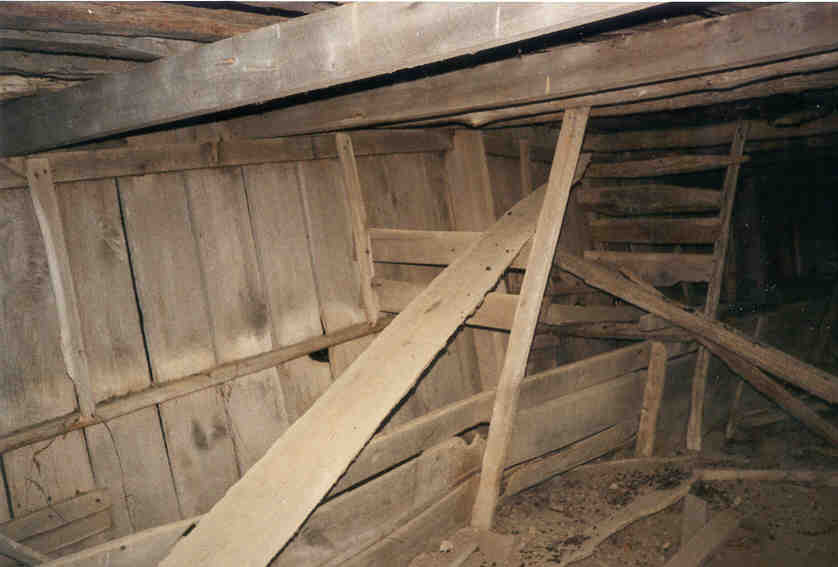
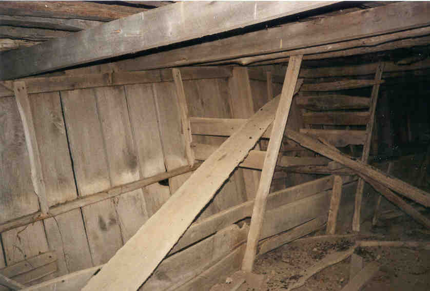
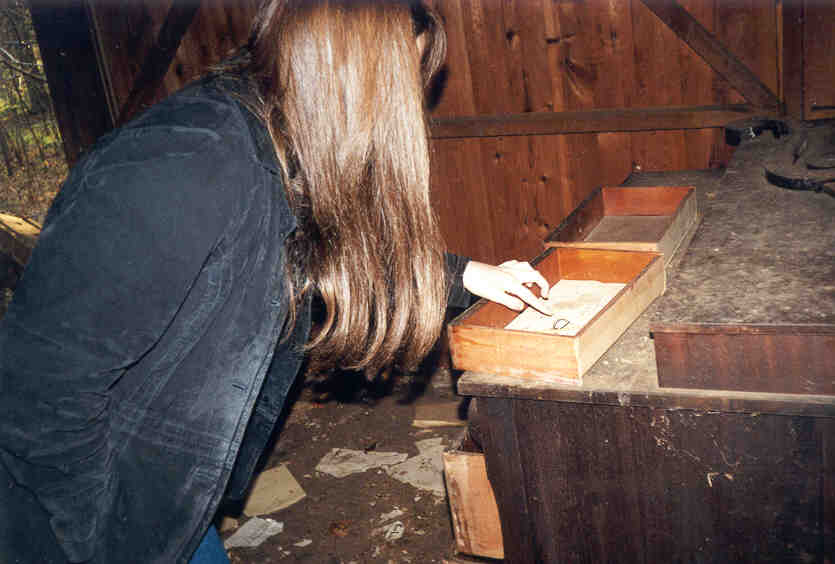

South of London, Ohio, in Madison County, at the corner of Old Xenia and Roberts Mill Road, there is a patch of woods which looks really creepy at night. My now ex-girlfriend, who lived in the immediate area, informed me that they're supposed to be haunted, although the story is pretty vague. One of her sisters told her about an old house deep in the woods. So one night she and I decided to park the car and walk in with just my dying flashlight, to investigate and see if there were any ghosts.
There weren't. But we did get pretty freaked out. Way out in the cornfields there isn't much in the way of civilization, so being deep in the pitch-black woods was pretty scary. Since I didn't know the story behind the haunting I couldn't be very specific, but we waited and listened for ghosts. Then we ran back to the car.
A few weeks later we went back in for a daytime exploration and saw a lot more than we had at night. For one thing, the woods aren't that big. For another, they're full of dilapidated old barn-type buildings, some of which are falling apart so badly you can't even tell what they were.
 

We wondered if the buildings were Amish barns from a good hundred years earlier--time enough for the trees to grow in. Out in the old Virginia Military District, where the girlfriend lives, the Amish are very populous. The story, as it turns out, is that the ghosts are associated with the farm which used to stand at this corner, before the new-growth trees sprung up over the course of a century or two and turned it into woods. Indians or perhaps bandits massacred the settler family, and they haunt the area. People driving by sometimes catch a glimpse of them in among the trees or walking alongside
the road.


A couple of the buildings are newer. One had some really awful stairs leading up to a loft, which is full of old furniture and junk. We found ancient eyeglass lenses in a broken-down old dresser, as well as a sideboard, bedframe, and trunk.

People sometimes ask if I ever find antiques inside old buildings. This one has some antiques, but I'm not sure they're salvageable.



The weirdest thing about these haunted woods was the little apiary sitting on the main path. At least I think that's what it is. So it might not be a good idea to visit in the summer, unless you like getting stung.
It was surprising to find so much in a little patch of haunted woods. Makes you wonder what you pass by every day out in the country. Unfortunately, if the place is haunted, the ghosts don't show themselves on command.
Back